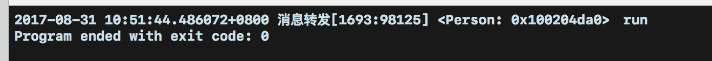
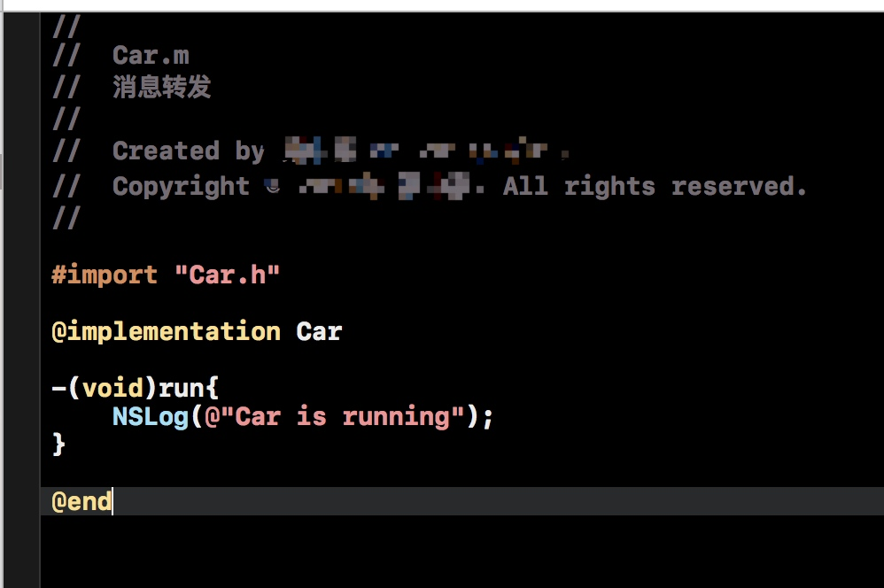
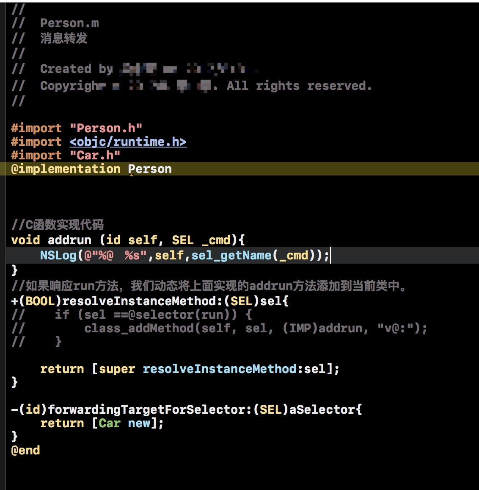
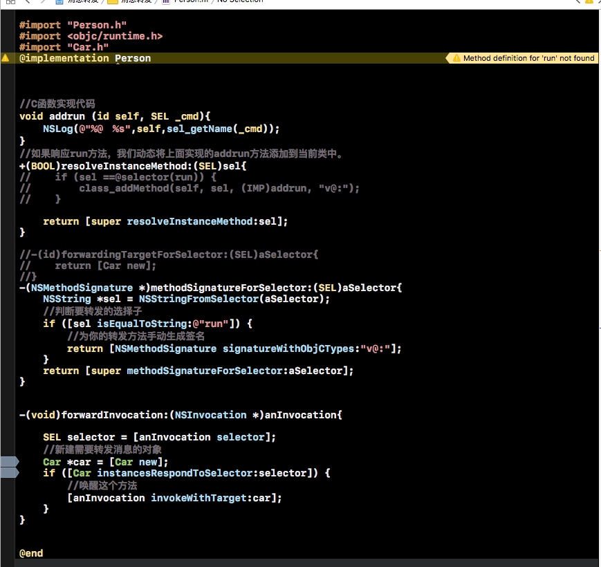

第一种
首先我们来实现这两个方法：
+(BOOL)resolveInstanceMethod: (SEL)sel
+(BOOL)resolveClassMethod:(SEL)sel
这两个方法用于方法的动态解析，当一个对象执行一个方法时，发现没有找到所对应的实现。这是就要靠上面的方法来动态添加实现了
举例来说：
//
// Person.h
// 消息转发
#import <Foundation/Foundation.h>
@interface Person : NSObject
//接口中声明一个方法
-(void)run;
@end
//
// Person.m
// 消息转发
#import "Person.h"
#import <objc/runtime.h>
@implementation Person //在部署的时候我们没有实现接口中声明的run方法
//编写C函数实现代码
void addrun (id self, SEL _cmd){
NSLog(@"%@ %s",self,sel_getName(_cmd));
}
+(BOOL)resolveInstanceMethod:(SEL)sel{
if (sel ==@selector(run)) {
//如果响应run方法，我们动态将上面实现的addrun方法添加到当前类中。
class_addMethod(self, sel, (IMP)addrun, "v@:");
}
return [super resolveInstanceMethod:sel];
}
@end
// main.m
// 消息转发
#import <Foundation/Foundation.h>
#import "Person.h"
int main(int argc, const char * argv[]) {
@autoreleasepool {
//执行代码
Person *man = [Person new];
[man run];
}
return 0;
}
结果为：
说明执行了我们添加的那个方法，而并没有报错。
第二种
我们可以动态的向类中添加方法来解决无选择子的问题，我们也可以选择转换接受者来选择可以处理该选择子的对象。
首先当我们，没有处理第一种方法的时候，运行期系统会给我们第二个机会，询问是否有备用的接受者。我们就要实现orwardingTargetForSelector了
我们举例来看：
首先我们先创建一个新类Car，并且创建一个run方法：

然后在Person.m中，不对resolveInstanceMethod进行任何处理，在forwardingTargetForSelector中返回一个Car实例：

然后继续执行main.m文件，运行为：
说明系统已经将所要实现方法的对象转换为Car的实例对象。
第三种
如果前两种我们都没有实现的话，就会进入第三种，执行完整的消息转发机制。
就会调用两个方法methodSignatureForSelector和forwardInvocation
methodSignatureForSelector方法用来指定方法签名，返回nil表示不处理，否则会进入下一步调用forwardInvocation方法。其中这个签名就是给forwardInvocation中的参数NSInvocation调用的。

开头我们要找的错误unrecognized selector sent to instance原因，原来就是因为methodSignatureForSelector这个方法中，由于没有找到run对应的实现方法，所以返回了一个空的方法签名，最终导致程序报错崩溃。
所以我们需要做的是自己新建方法签名，再在forwardInvocation中用你要转发的那个对象调用这个对应的签名，这样也实现了消息转发。
关于生成签名的类型"v@:"解释一下。每一个方法会默认隐藏两个参数，self、_cmd，self代表方法调用者，_cmd代表这个方法的SEL，签名类型就是用来描述这个方法的返回值、参数的，v代表返回值为void，@表示self，:表示_cmd。
所以第二个和第三个字符必须是“@:” ，第一个字符是返回类型.
具体的可以看一下了解：Type Encodeing